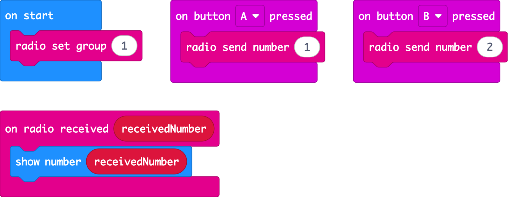

Radio: micro:bits talking
Two micro:bits can talk by radio. Start by sending a number from one to the other, then build a tilt remote and drive the TPBot with it. Open a lesson to see what you need, the steps and the blocks.
Radio on the micro:bit
Every micro:bit has a small radio built in. It sends short
messages through the air to other micro:bits nearby: no wires and no internet. In lesson 2 one micro:bit is a
remote in your hand. You tip it, it sends a message such as forward, and the
micro:bit in the car hears it and drives.
Getting the car ready
- Open ExtensionsAt the bottom of the block list, click Extensions.

- Search for TPBotType
TPBotin the search box and press Enter.
- Click the TPBot cardClick the picture of the blue car.

- The teal drawer appearsA teal TPBot drawer joins the list. The pink Radio drawer is already there.

Your radio group
Two micro:bits hear each other only when they are on the same radio group. Use your car's number as the group, in both programs, so every pair drives only its own car. radio set group is the first block in the pink Radio drawer.
1Two micro:bits talkingPress a button on one micro:bit and a number appears on the other.
You need
- Two micro:bits
- USB cable
- A battery pack, or a second laptop
Build it
- Start a new project called
talk. Put radio set group 1 in on start. Change 1 to your car's number. - Add on button A pressed with radio send number 1 inside, and the same for B with 2.
- Add on radio received receivedNumber with show number inside. Drag
receivedNumberfrom the pink block into the gap. - Download the same program to both micro:bits. Press A on one and watch the other.
The blocks

What happens
Press A on one micro:bit and the other shows 1. Press B and it shows 2. It works both ways.
The idea. The radio sends a message, and the group number decides who hears it.
Now change it
- Send a different number on A+B.
- Show an icon instead of the number when 1 arrives.
- Try radio send string to send a word, and on radio received receivedString to show it.
2A tilt remote for the TPBotTip one micro:bit like a steering wheel and the car drives.
You need
- TPBot
- Two micro:bits
- USB cable
- A clear patch of floor
Build it
- Build the remote in a project called
remote. Each forever holds a while with is logo down gesture and radio send. - To name a message, click the dropdown in radio send, choose New message and type
forward. Makeback,left,rightandstopthe same way, in small letters. - Above each radio send, add show arrow pointing the way the car will go, and show icon with a cross for
stop. The remote's screen shows what you are sending. - Download the remote to the micro:bit that stays in your hand.
- Build the car in a project called
car-2, with the TPBot extension. Add one on radio … received for each message, using exactly the same five names. - Use the same group number in both projects. Download the car program to the second micro:bit and slot it into the car.
The blocks


What happens
Tip the remote forward and the car drives forward. Tip it back, left or right and the car follows. Shake it and the car stops.
The idea. The car keeps doing its last order until a new message arrives, so stop is a message too.
Now change it
- Change 50 to 30 in every block for a slower, easier car.
- Make the left and right turns gentler: try 0 and 50 instead of −50 and 50.
- Turn the headlights green on forward and red on stop.